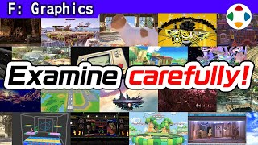
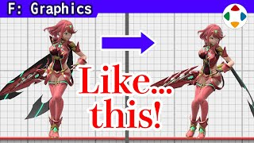
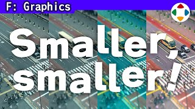
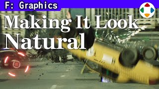
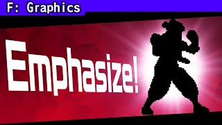
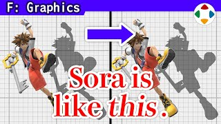

首页 / F 图形美术
 #13:32
#13:32画光，而不是画素材
Draw the Light, Not the Asset图形分类的开篇：樱井常对背景美术说「不要画素材，要画反射在素材上的光」。我们看到的一切都是反射进眼睛的光；做一棵树不能只给树干涂茶色、叶子涂绿色。以森林为例：加入光、错开色相、加入空气感，最终输出要表现环境中的光。
 #22:30
#22:30强调有判定的东西
Emphasize Objects with Collision历代《大乱斗》做舞台时几乎每次都会说：强调有接触判定的部分，不强调其他部分。动作游戏里知道地板在哪很重要，但 3D 透视会让判定位置难懂；背景太抢眼时地形会被淹没。简单降低远景存在感又会损害美观——一切是平衡，略偏向游戏即可。
 #32:46
#32:46分辨大事与小事
Distinguishing Between Major and Minor Elements游戏机性能往往比常人想象的低，必须精打细算。重要的是分辨效果高与低的地方：《大乱斗》画面中央最常被看，舞台上方比画面外的地基重要；斗士常被小尺寸显示要适度，但也会被放大做素材。LOD 也要权衡。舞台组看不见的讲究——如墨水舞台远景里车轮会转——被要求减轻。
 #43:52
#43:52把握好尺度感
Get the Sense of Scale Right监修画面时樱井最常提的修改之一是「尺度感要对」：巨大物体容易看起来像小东西。实物摩托和模型形状颜色相同，尺度感却迥异——差别来自贴图、饱和度、高光、法线贴图、污渍与色相变化，而非形状。CG 物体通常更像模型，要想办法弥补这差距。
 #53:17
#53:17用修图来监修美术
Supervising Art Through Retouches图形监修时，最好的方式是直接把调整后的样子给对方看。樱井展示了命魂探索洞窟、魔罗克背景、灯火之星通路的修图前后对比，并演示洞窟修图步骤：提高对比、错开色相、在受光处擦除、整理色调。每张 5～10 分钟，比口头说明有效；但监修只给方向，成品级打磨还要靠美术。

#617:36近看《大乱斗》的舞台
An Up-Close Look at Smash Bros. Stages《大乱斗 特别版》光基础舞台就约 115 个，要在 Switch 上以 8 人同屏、60 帧运行，几乎没有余裕。樱井简短开场后，整集以无旁白的近距离镜头巡览约 70 个舞台，作为看舞台组心血、给美术志愿者参考的资料。
 #72:58
#72:58像素画的基础
The Basics of Pixel Art初代 GB《星之卡比》的卡比本体像素画是樱井画的。他介绍少色数像素画技巧：16×16 精灵里画圆，15 点比 16 点更圆（有中线）；只有黑白两色时，用网点、反转网点、涂黑留高光改变质感；多一色就能做柔边和地面反光。
 #82:45
#82:45统一画风
Unifying Visual Style作为工作做游戏，不论擅长与否都要完成各种工作；美术进了同一团队就要对齐同一画风。为此常做「概念图（Image Board）」：由少数优秀的人带头画世界观、角色、道具，再据此建模、深化光照，缩小水平与取向差异。《大乱斗》给马力欧的工装裤加上牛仔布纹理，正是为了对齐画风。
 #94:31
#94:31动画与真人之战
A Fight Between Live Action and Animation《大乱斗》里卡通角色和写实角色同台，只照官方形象来做会很不协调。樱井介绍五个统一笔触的做法：降低饱和度、适度刻画纹理、调整头身比、必要的重新设计、做成「现实中可能存在」的表现。目标是不让画面看起来像动画和真人在打架。
 #102:50
#102:50画面好坏影响乐趣吗？
Do Graphics Impact Fun?常听人说「游戏乐趣与画面漂亮无关」。游戏性和画面确实能分开考虑，但游戏性显然能衬托画面：背景本质上只是可穿透的多边形布景，它的存在感取决于游戏内容——在《黑暗之魂》里你会警惕每个角落，换成索尼克高速跑过则完全不同。另外，商店里的横幅决定玩家会不会点进来：画面和乐趣是乘法。

#1111:53监修杂谈
Odds and Ends of Supervising远程办公后监修基本靠邮件文字，但直接展示更好懂，所以樱井常修图、画图来指示。本集按顺序展示史蒂夫、Minecraft 舞台、焰／光（Pyra/Mythra）、阿尔斯特云海、一八（Kazuya）、三岛道场、Mii 斗士与宣传横幅的大量监修图——这些在成品中都已修正。

#122:28让东西看起来像微缩模型
Making Things Look Miniature做游戏时常出现尺度感不对、大东西看起来小的问题。樱井先教微缩照片的做法：俯拍、上下模糊（景深）、提高饱和度、降低蓝色（去掉空气透视）。反过来，这些处理会让大东西看起来小：景深除非有意图少用；大东西饱和度要克制。
 #132:28
#132:28应对显示器色差
Dealing With Color Disparity图形检查的长期难题：每个人的显示器色彩不同，同型号也会有差，周围照明也影响观感。对美术和监修者是生死攸关。有测色校色仪器，但输出常是电视，不太可靠；最终把一台显示器放到大家都能看见的地方，远看目测调整。玩家的电视也可能如此。还建议用没有个性的照明。

#142:30动态模糊
Motion Blur《卡比的空气滑翔机》的「轮子」能力，樱井每次看都后悔：中央的星星没做旋转模糊。《大乱斗 特别版》火车舞台的车轮和铁轨一开始就加了模糊。模糊是运动的残影，补间两帧之间、减少逐帧感；可手绘也可硬件计算，但做过头反而违和、看不清，不少作品提供模糊调节选项。
 #152:31
#152:31让不存在的东西显得真实
Making the Imaginary Feel Real游戏世界从制作方看只是布景：没有质量，不放判定就会穿过，没有程序连掉落都不会。之所以感觉真实，是因为画面、声音、程序、参数等让它带上了实感。让本不存在的东西显得存在，综合来说就是「表现」。做桌子不只是做桌子：质感、光照、量感、生活感都要控制；空气流动也容易被忽视。
 #162:30
#162:30最终输出
Final Output在高端 PC 和家用机上，「最终输出」越来越关键。游戏机生成的图先存进帧缓冲区，在其中绘制背景、角色、UI，并运用着色器、渲染，全部画完再传到画面。关键是如何用后处理做出好画面：对比《DX》与《特别版》，后者色彩混合、加入地面反光。角色多边形漂亮就行的时代结束了。
 #174:25
#174:25只为破坏一面墙
All to Destroy One Wall三岛道场舞台的「墙壁破坏」是樱井印象中特别难监修的部分。他展示修图与指示图：断面别像锯子切出、要不规则锯齿、保持板面 X 坐标只在 Y/Z 方向做锯齿、柱子别规则残留、碎片别挡住斗士通过的中线……最终效果很好。若多次监修仍不行，只能决断按原样出货。
 #183:04
#183:04漫画式表现
Manga-like Visuals先不谈卡通渲染。日本漫画和动画有很多有趣的表现：透过眼镜框看到眼睛、侧脸时嘴长在脸侧。《洛克人 DASH》过场中嘴移到侧面让他震撼；索尼克也是。有些漫画表现在 CG 里很难做（猫和老鼠挤过窄处），但他推荐使用。附《特别版》卡比和胖丁嘴型的监修故事。

#192:41用设计立住角色
Establishing Characters Through Their Design《大乱斗 特别版》Mii 斗士娜可露露最初基于《KOF XIV》的模型，樱井觉得「不是这样」，重做后成了经典形象，同时保留新元素。1993 年《侍魂》的娜可露露形体变形与张弛很棒，和索尼克的变形感相近。让想象的画显得帅，他最重视剪影：涂黑也要可辨识；姿势也一样；角色要由全员一起立住。

#209:55监修杂谈：苏菈篇
Odds and Ends of Supervising: Sora Edition获得许可后，樱井展示《大乱斗 特别版》开发中为苏菈画的修图与指示图：姿势剪影、站位、动作的挥出方向、拍手的手腕、配色差异、脸上的小垃圾、魔法特效的暗部、地上/空中招式差异、命中特效、空洞堡垒舞台的颜色与对比、参战影片 CG 等。都在成品中修正了——质量来自不放弃的反复打磨。